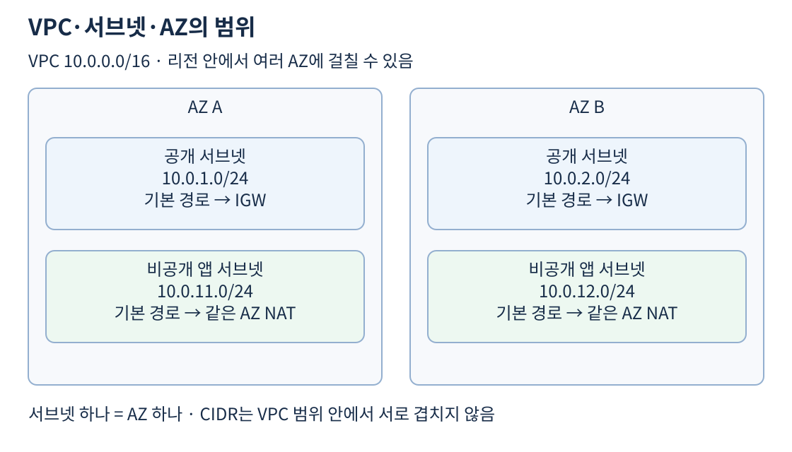
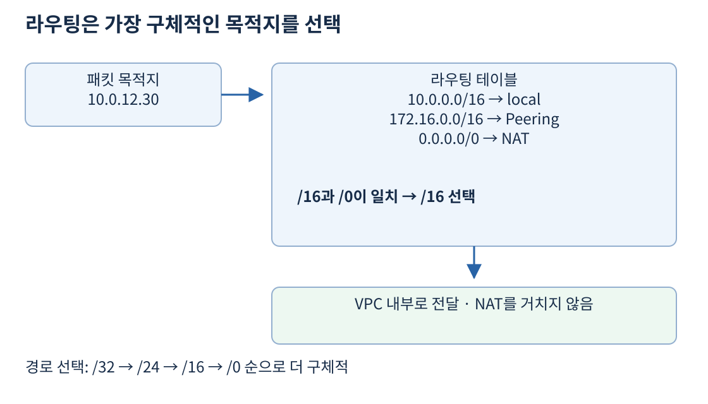
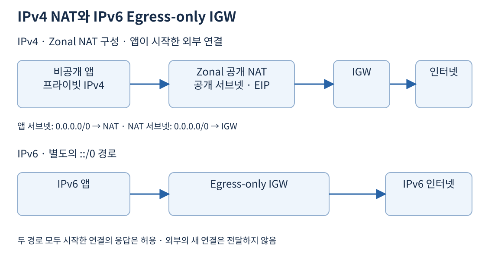

VPC는 AWS 리전 안에서 만드는 논리적으로 격리된 네트워크다. 서버가 어느 주소를 쓰고, 다른 서버나 인터넷으로 어떤 경로를 이용하는지 정한다. VPC를 만들었다고 모든 서버가 인터넷에 공개되는 것은 아니다. 주소, 라우팅, 네트워크 접근 허용을 각각 갖춰야 통신한다.
IP 주소는 패킷의 출발지와 목적지를 나타낸다. 10.0.1.20 같은 IPv4 주소는 네 개의 숫자로 표현한다. 10.0.0.0/16은 단일 서버 주소가 아니라 주소 범위다. /16은 앞의 16비트를 네트워크 구분에 사용한다는 뜻이다. 같은 시작 주소에서 뒤의 숫자가 클수록 고정되는 비트가 많아져 주소 범위는 작아진다. /24는 /16보다 작은 네트워크다.
| 표기 | 포함하는 IPv4 주소 | 용도 예 |
|---|---|---|
10.0.0.0/16 |
10.0.0.0~10.0.255.255 | VPC 전체 |
10.0.1.0/24 |
10.0.1.0~10.0.1.255 | 한 서브넷 |
10.0.1.20/32 |
10.0.1.20 한 개 | 특정 호스트 경로 |
0.0.0.0/0 |
모든 IPv4 주소 | 더 구체적인 경로가 없을 때 |
범위에 포함된 주소가 모두 EC2 할당용인 것은 아니다. AWS는 일반적인 IPv4 서브넷에서 처음 네 개와 마지막 한 개를 예약한다. 따라서 /24의 256개 중 251개를 리소스에 사용할 수 있다. 로드 밸런서, 엔드포인트, 확장할 서버도 주소를 소비하므로 현재 EC2 수만 보고 서브넷을 작게 잡으면 나중에 확장이 막힌다.
출처: 서브넷 CIDR과 예약 주소
서브넷은 VPC 주소 범위의 일부이며 하나의 AZ에 속한다. VPC는 여러 AZ에 걸칠 수 있지만 서브넷 하나를 두 AZ에 걸쳐 만들지는 않는다. AZ 장애에 대비하려면 AZ마다 별도 서브넷을 만들고 그 안에 서버를 나눠 배치한다. 같은 서브넷 안에 EC2 두 대를 놓는 것만으로 AZ 장애에 대비할 수는 없다.

예를 들어 AZ A의 웹 진입부에 10.0.1.0/24, 앱에 10.0.11.0/24를 쓰고 AZ B에는 10.0.2.0/24, 10.0.12.0/24를 쓸 수 있다. 각 서브넷 주소는 VPC 범위 안에 들어가고 서로 겹치지 않아야 한다. 서브넷 이름에 public을 붙이는 것만으로 공개되지는 않는다. 인터넷 게이트웨이로 향하는 직접 경로가 있는지가 공개 서브넷 구분의 핵심이다.
비공개 서브넷은 인터넷 게이트웨이로 직접 보내는 경로가 없다. 인터넷으로 나갈 때 NAT를 사용할 수도 있고, 인터넷행 경로 없이 내부 통신만 하도록 만들 수도 있다. 따라서 비공개라는 말과 외부 통신 불가라는 말은 같은 뜻이 아니다. DB는 인터넷행 기본 경로 자체가 없는 서브넷에 배치하고 필요한 앱 통신만 허용하는 구성이 가능하다.
라우팅 테이블은 목적지 주소에 따라 패킷을 어디로 보낼지 정한다. Destination은 찾아갈 주소 범위, Target은 그 경로에서 사용할 게이트웨이나 연결이다. 한 서브넷에는 한 번에 하나의 라우팅 테이블이 연결되고, 여러 서브넷이 같은 테이블을 공유할 수 있다. 명시적으로 연결하지 않은 서브넷은 VPC의 기본 라우팅 테이블을 사용한다.
| 목적지 | 대상 | 의미 |
|---|---|---|
10.0.0.0/16 |
local |
이 VPC 내부 주소로 전달 |
172.16.0.0/16 |
VPC 피어링 연결 | 연결된 다른 VPC로 전달 |
0.0.0.0/0 |
NAT Gateway | 나머지 IPv4 목적지는 NAT로 전달 |
local 경로는 VPC 내부 통신을 위한 기본 경로다. 기본 경로가 NAT로 향하더라도 10.0.12.30으로 가는 패킷은 /16인 local 경로와 일치하므로 NAT를 거치지 않는다. 172.16.2.10은 피어링 경로를, 8.8.8.8은 기본 경로를 사용한다.

라우팅 테이블을 위에서 아래로 실행하는 방화벽 규칙처럼 읽지 않는다. 일반적으로 일치하는 범위 중 가장 구체적인 경로, 즉 longest prefix match가 우선한다. /24는 /16보다, /16은 /0보다 구체적이다. 동일 목적지의 정적 경로와 전파 경로처럼 우선순위에 추가 규칙이 필요한 경우도 있지만 첫 판단은 목적지 범위다.
경로가 있다고 통신이 허용되는 것은 아니다. 라우팅은 길을 정하고, 보안 그룹과 NACL은 그 길을 통과할 패킷을 통제한다. 다른 VPC나 온프레미스와 통신할 때는 돌아오는 경로도 필요하다. 요청이 도착하더라도 응답의 목적지로 갈 경로가 없으면 연결은 실패한다.
출처: 경로 선택 우선순위, 서브넷과 테이블 연결
Internet Gateway, IGW는 VPC와 인터넷 사이의 연결을 제공한다. 퍼블릭 EC2의 IPv4 인터넷 통신에는 VPC에 연결된 IGW, 서브넷의 IGW행 경로, 인스턴스의 퍼블릭 IPv4 또는 Elastic IP, 통신을 허용하는 보안 규칙이 필요하다. 운영체제 방화벽과 실제 서버 프로그램도 해당 포트를 처리해야 한다.
공개 서브넷에 EC2를 놓아도 퍼블릭 IPv4가 없으면 일반적인 IPv4 인터넷 직접 통신은 되지 않는다. 반대로 퍼블릭 주소가 있어도 서브넷 라우팅이 IGW를 향하지 않으면 그 주소 하나로 경로가 완성되지 않는다. 주소와 길을 별도로 확인해야 한다.
EC2 운영체제는 보통 프라이빗 IPv4를 사용하고 IGW가 퍼블릭 IPv4와 연결되는 주소 변환을 담당한다. 서버 OS에 퍼블릭 주소가 직접 보이지 않는다고 잘못된 구성은 아니다. Elastic IP는 고정된 퍼블릭 IPv4가 필요한 경우 사용하는 주소이며 IP를 고정하는 것과 서버 장애를 복구하는 것은 별개다.
IPv6는 IPv4와 경로를 별도로 가진다. 0.0.0.0/0 경로는 IPv6 패킷에 적용되지 않으며 IPv6 전체 기본 경로는 ::/0이다. IGW는 두 주소 체계를 지원하지만 IPv6 인터넷 통신은 IPv4의 일대일 주소 변환을 그대로 적용하는 방식이 아니다. IPv6 주소가 있어도 경로와 보안 규칙이 맞아야 한다.
앱 서버가 보안 업데이트를 내려받아야 하지만 인터넷에서 앱 서버로 직접 연결하는 것은 막고 싶다고 하자. 서버에 퍼블릭 IPv4를 주지 않고 Zonal 모드의 퍼블릭 NAT Gateway를 통해 외부로 요청하게 할 수 있다. NAT는 프라이빗 서버가 시작한 연결과 그 응답을 처리한다. 외부에서 임의로 시작한 새 연결을 해당 서버에 전달하는 공개 진입점은 아니다.

IPv4 요청은 앱 → 퍼블릭 NAT Gateway → IGW → 인터넷으로 이동한다. 응답은 그 연결의 상태에 따라 반대 방향으로 돌아온다. 여기서 NAT와 IGW는 대체 관계가 아니다. 퍼블릭 NAT가 인터넷에 접근하려면 IGW도 필요하다.
| 위치 | 필요한 설정 |
|---|---|
| 앱이 있는 비공개 서브넷 | 0.0.0.0/0 → NAT Gateway |
| NAT가 있는 공개 서브넷 | 0.0.0.0/0 → IGW |
| 퍼블릭 NAT Gateway | 생성 시 Elastic IP 연결 |
| 앱 인스턴스 | 프라이빗 IPv4, 허용된 아웃바운드 통신 |
퍼블릭 NAT를 비공개 서브넷에 두고 이름만 public으로 지정해도 인터넷 출구가 되지 않는다. 이 Zonal 구성에서는 NAT가 배치된 서브넷에도 IGW행 경로가 있어야 한다. NAT Gateway에는 보안 그룹을 직접 연결하지 않으며 앱 보안 그룹과 서브넷 NACL 등을 이용해 통신을 통제한다.
NAT Gateway에는 private 연결 유형도 있다. 프라이빗 NAT는 VPC나 온프레미스 사이의 주소 변환 등에 사용하며 인터넷 접속용 퍼블릭 NAT와 구분한다. 인터넷 출구라는 요구에 private NAT만 배치해서는 해결되지 않는다.
출처: NAT Gateway 연결 유형, NAT Gateway 특성
Zonal 모드에서 AZ A의 NAT 한 개를 AZ B 서버도 함께 사용하도록 라우팅할 수 있다. 그러나 AZ A에 문제가 생기면 B의 앱이 살아 있어도 인터넷 출구를 잃을 수 있다. 관리형 NAT라고 해서 한 AZ의 NAT를 모든 AZ가 공유해도 장애 영향이 사라지는 것은 아니다.
AZ마다 NAT를 두고 각 비공개 서브넷이 같은 AZ의 NAT를 사용하면 이 의존성을 줄인다. 대신 NAT별 시간 요금이 늘어난다. 한 개로 모으면 고정 비용은 줄일 수 있지만 AZ 간 전송 비용과 장애 범위가 커질 수 있다. 데이터 처리량이 크면 시간 요금보다 처리량 요금이 더 중요할 수도 있다. S3 같은 목적지는 다음 날의 VPC 엔드포인트로 NAT 통과량을 줄일 수 있다.
출처: NAT 배치와 장애 대응, NAT 요금과 최적화
Regional NAT Gateway는 VPC 수준에서 생성하며 NAT를 둘 공개 서브넷을 지정하지 않는다. 자동 모드는 워크로드가 있는 AZ에 맞춰 확장하고 여러 서브넷이 같은 NAT ID를 경로로 사용할 수 있다. 따라서 “NAT ID 하나는 반드시 한 AZ에만 의존한다”는 설명은 Regional 모드에는 적용되지 않는다. 수동 모드에서는 AZ 확장과 주소 관리를 직접 수행한다. 자동 확장도 즉시 완료되는 것은 아니므로 전환 중 경로·비용과 모드별 요건을 확인한다. 위 라우팅 예와 그림은 Zonal 모드의 기본 구성을 설명한다.
출처: Regional NAT Gateway의 모드와 자동 AZ 확장
NAT 인스턴스는 EC2에서 NAT 기능을 직접 운영하는 방식이다. 인스턴스 유형, OS 패치, 처리량, 장애 시 대체와 경로 변경을 고객이 관리한다. 통과하는 패킷은 NAT 서버 자신이 최종 출발지나 목적지가 아니므로 source/destination check를 해제해야 한다. 처리량이 작을 때의 비용이나 세밀한 제어를 검토할 수 있지만 관리 작업과 장애 대응 비용까지 비교해야 한다.
관리 부담을 줄이는 일반적인 요구에는 NAT Gateway가 우선 검토 대상이다. NAT 인스턴스의 작은 EC2 요금만 보고 총비용이 더 낮다고 단정하지 않는다. 서버 한 대가 포화되면 뒤의 모든 앱이 외부 연결 지연을 겪을 수 있다.
IPv6 서버가 인터넷으로 요청하고 응답은 받되 인터넷에서 시작한 새 연결을 차단하려면 egress-only internet gateway를 사용한다. IPv6용이며 IPv4 NAT Gateway와 역할을 구분한다. 서브넷에 ::/0 → egress-only IGW 경로를 설정한다. IPv6 주소를 IPv4처럼 숨기기 위한 NAT 장치로 이해하지 않는다.
듀얼 스택 서버는 IPv4와 IPv6를 모두 쓸 수 있다. IPv4 경로만 검토하고 IPv6를 방치하면 예상과 다른 외부 통신이 생길 수 있다. 주소 체계별로 경로와 접근 규칙을 확인한다. IPv6 클라이언트가 IPv4 전용 서비스에 접근하는 NAT64·DNS64는 별도 변환 요구이며 일반적인 IPv6 외부 통신과 구분한다.
출처: Egress-only IGW, DNS64·NAT64
앱에서 패키지 다운로드가 실패하면 먼저 목적지가 IPv4인지 IPv6인지, DNS 조회가 됐는지 확인한다. 그다음 앱 서브넷의 연결된 테이블, NAT의 상태와 배치, NAT 서브넷의 IGW행 경로를 따라간다. 경로가 맞으면 보안 그룹, NACL, OS 방화벽, 목적지 서비스 상태를 확인한다. 무작정 모든 포트를 여는 것보다 실패 지점을 좁히기 쉽다.
사용자가 웹사이트에 접속하는 흐름은 NAT와 다르다. 다음 6일 차에서는 사용자 → 인터넷 공개 로드 밸런서 → 비공개 앱 경로를 다룬다. 앱이 외부 API를 호출하는 NAT 경로와 사용자의 요청을 받는 로드 밸런서 경로는 같은 앱에 공존할 수 있다.
TCP 연결에서 IP 주소는 통신할 컴퓨터를, 포트는 그 컴퓨터의 프로그램 접점을 구분한다. HTTPS 요청 앱:51000 → API:443에서 51000은 앱이 고른 임시 포트다. 응답은 API:443 → 앱:51000으로 돌아온다. 경로를 읽을 때는 요청과 응답의 목적지 IP·포트를 각각 적는다. NAT는 이 연결의 주소·포트 대응을 기록하고 반환 패킷을 원래 앱에 전달한다. ALB는 사용자의 요청을 받아 앱에 별도 연결을 만드는 분산기이므로 앱의 외부 호출 경로를 대신하지 않는다.
예를 들어 /16 → VPN, 그 안의 /24 → 검사망, /0 → NAT가 있으면 /24에 포함된 특정 서버는 검사망으로 간다. 그 서버 하나만 VPN 예외로 만들려면 해당 IP의 /32 → VPN을 추가할 수 있다. /24 전체를 삭제하면 나머지 서버의 검사 경로도 바뀐다. 라우팅은 규칙 번호가 아니라 일치하는 접두사 길이를 비교한다.
IPv4 주소 하나로 같은 목적지 IP·포트·프로토콜에 집중하는 NAT 연결에는 포트 할당 한도가 있다. 전송 바이트는 충분히 낮아도 ErrorPortAllocation이 증가하면 대역폭과 다른 문제다. 추가 주소, 연결 재사용, 실제 경로를 나눈 NAT 증설을 비교하며 AZ 장애 격리는 따로 유지한다. IPv6끼리의 외부 시작 연결 차단은 egress-only IGW, IPv6-only 앱의 IPv4-only API 호출은 DNS64의 합성 주소와 NAT64 변환이 필요한 별도 요구다.
패킷 왕복·CIDR 계산·NAT 포트와 모드·IPv6 변환 심화에서 구성 예와 실패 원인을 이어서 설명한다. 핵심은 주소·왕복 경로·AZ 경계이며 상세 NAT 수치와 모드 설정은 보충이다. NAT 연결 한도, DNS64·NAT64.
/16, /24, /32, /0의 주소 범위와 경로 선택공식 자료 확인일: 2026-11-02